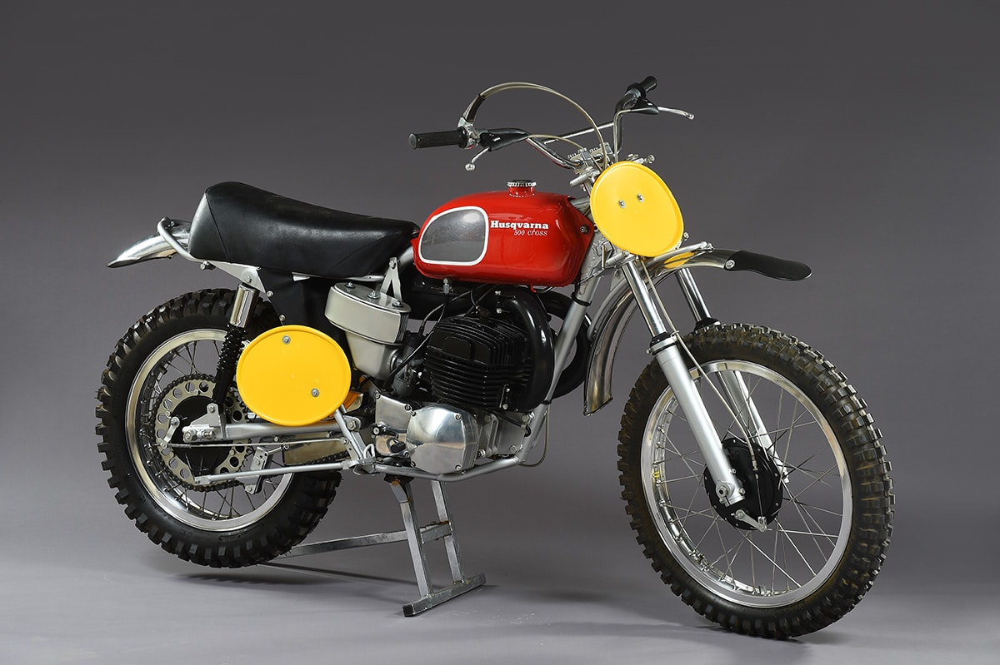
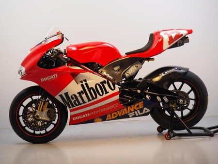
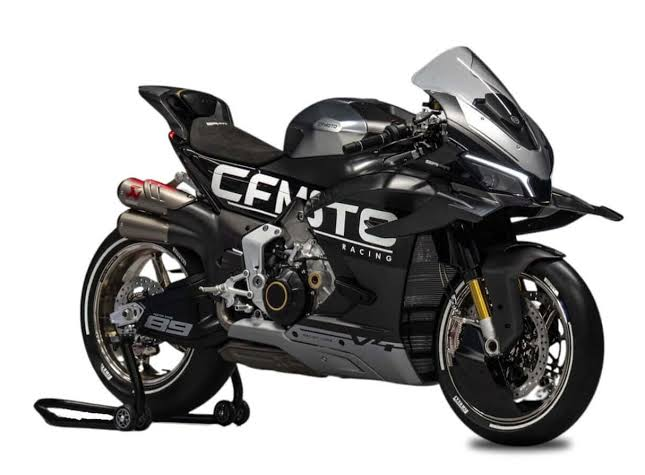

Museo
MotoGP
Inicio
Exposiciones
Horario
Entradas
Ubicación
Contacto
Galería: Máquinas de leyenda
Tres épocas de las motos de Gran Premio.

Moto de 500 cc de 2 tiempos, la era clásica de la categoría.

Prototipo de 990 cc, de los primeros años de MotoGP.

Moto actual de 1000 cc con alerones aerodinámicos.
Tecnología en pista
Volver a exposiciones
Campeones del mundo